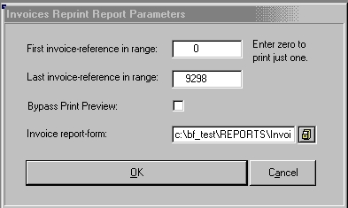

From the main menu, click on Sales, then point to Invoices and then click on Reprint.

To print a range of invoice:
Type the first and last invoice numbers in the range into the respective boxes. Click OK.
To print a single invoice:
Leave the First invoice box at zero and type the invoice number you want in the Last invoice box. Click OK.
You can select which invoice form you use by clicking on the browse icon & selecting a different form from the list. This is a per PC setting, so you can print different invoice layouts on different PCs, or set all to the same form.